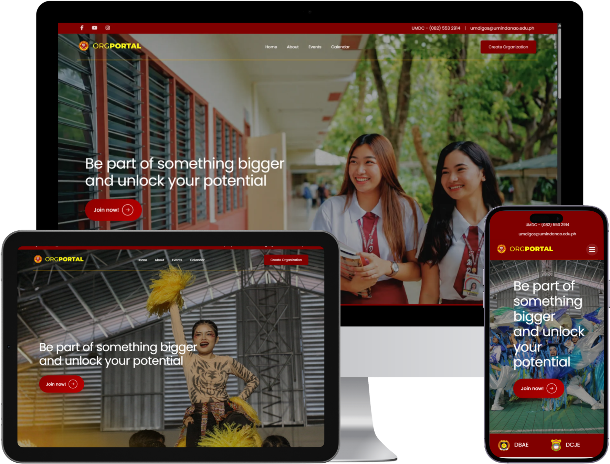
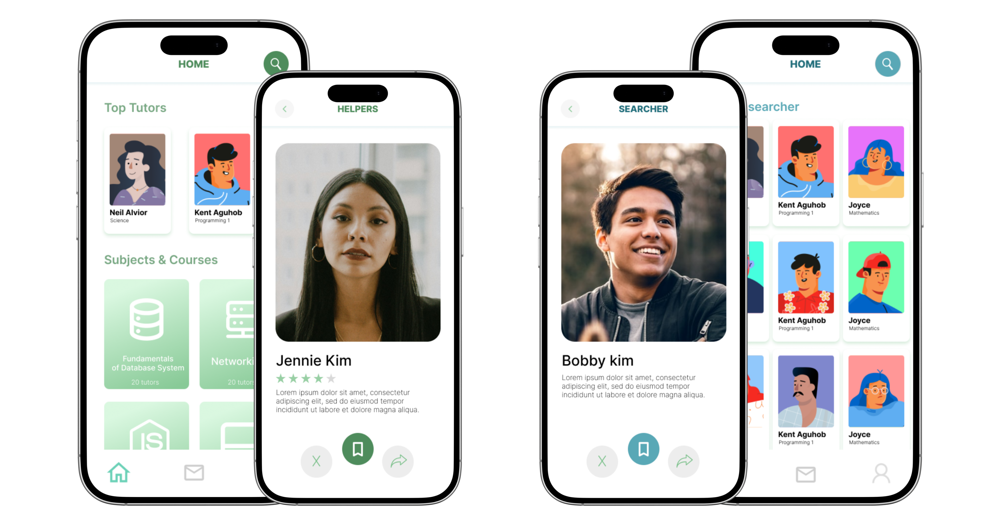

[01 // BIO_DATA]
I'm a Front-End Developer from Digos City, Philippines, passionate about building responsive, user-friendly websites with clean code and intuitive interfaces. Alongside development, I work as a Graphic Designer, creating engaging visuals that enhance user experiences and bring ideas to life through thoughtful design.
Graphic Design
Creating clean, modern, and engaging visual layouts, promotional materials, branding graphics, and custom digital illustrations tailored to represent your aesthetic.
Web Design
Designing detailed user flows, responsive layouts, and user-centric wireframes using Figma to establish clear interaction and layout patterns before coding.
Front-End Development
Building semantic, highly accessible, and pixel-perfect front-ends. Writing clean, modular CSS, custom JavaScript, and optimizing layouts for cross-device compatibility and speed.

UM ORGPORTAL
A Web-based student organization management and event system with descriptive analytics.

Intellect Connect
An educational app that takes the swipe-and-match concept of dating apps and applies it to student-tutor pairings. Finding the right academic support has never been this engaging or personalized.

EduPocket
An intelligent educational app empowering students to effortlessly monitor their spending habits and master personal finance.


Ready to discuss your next project?
Reach out today to start our collaboration. I will analyze your product requirement layout, design wireframes, and translate them to live technical solutions.